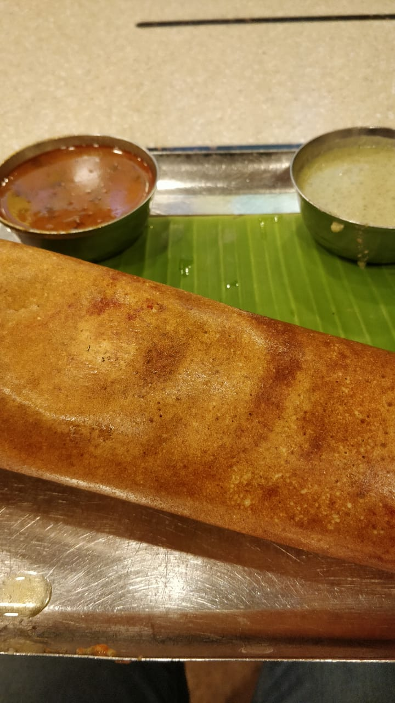

Dosa

Dosa Recipe
Main Ingredients
- For the Dosa Batter:
- Raw rice : 1½ cups
- Urad dal (split black gram) : ½ cup
- Fenugreek seeds (methi) : ½ tsp
- Poha (flattened rice) : 2 tbsp (optional, for softness)
- Salt : to taste
- Water : as needed for soaking and grinding
- For Cooking:
- Oil or ghee : for greasing the pan
Steps to Prepare Dosa
- Rinse the rice, urad dal, fenugreek seeds, and poha (if using) in water.
- Soak them together in water for 4 to 6 hours.
- Drain and grind to a smooth batter using minimal water.
- Transfer batter to a large bowl, cover, and ferment overnight (8-12 hours) in a warm place.
- Once fermented, add salt and mix the batter gently.
- If the batter is too thick, add a little water to get pouring consistency.
- Heat a dosa tawa or flat non-stick pan on medium-high heat.
- Pour a ladle of batter in the center and spread in circular motion to form a thin dosa.
- Drizzle oil or ghee around the edges and let it cook until golden and crispy.
- Fold and remove from pan. No need to flip for plain dosa.
- Serve hot with coconut chutney, sambar, or tomato chutney.
Home